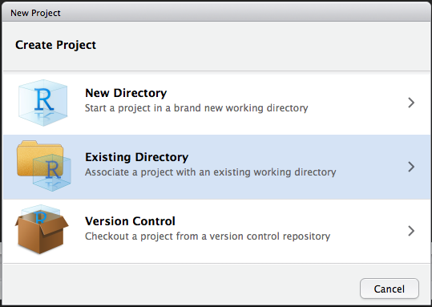
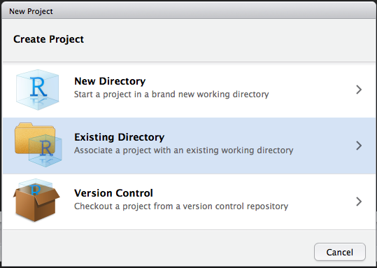

- 1 About
- 2 Best practices
- 3 Project workflows
- 3.1 Using Workflowr
- 3.2 Set Up Workflow and Executing
- 3.2.1 Create a folder for your newproject
- 3.2.2 Set up a repository for your code on Agios’ secure GitLab
- 3.2.3 Set up a repository for your code locally and link to GitLab
- 3.2.4 Set up an R project in RStudio
- 3.2.5 Analysis in R and RStudio
- 3.2.6 Version control in git and GitLab
- 3.2.7 Keeping track of enviroment
- 4 Toolbox
- References
3.2 Set Up Workflow and Executing
3.2.1 Create a folder for your newproject
Come up with a project stucture you like and stick with it.
3.2.1.1 Copy from a previously created template folder
Use cp -r project_template newproject, where project_template has structure:

3.2.1.2 Use a bash script
Call ./setup_project.sh newproject, where setup_project.sh is:
#!/bin/bash
NEW=$1
## Set up folder structure
mkdir $NEW
cd $NEW
touch README
mkdir data
mkdir data/raw
mkdir data/raw/pheno
mkdir data/interim
mkdir data/processed
mkdir data/processed/pheno
touch data/raw/MAKE_EVERY_FILE_READ_ONLY
mkdir results
mkdir results/reports
mkdir results/notebooks
mkdir results/figures
mkdir sub
mkdir sub/logs
mkdir sub/qsub
mkdir src
touch src/functions.R
Don’t forget!
- Fill project README
- Adapt structure to project needs
- Exclude data and other large files from git using .gitignore (see next section)
- Make files in data/raw read-only with chmod -w
3.2.2 Set up a repository for your code on Agios’ secure GitLab
Create a new project at http://ceres.agios.com (Mark P. can help)
3.2.3 Set up a repository for your code locally and link to GitLab
In your newproject folder on command line execute (modify user name):
git init
git add .
git commit -am 'initial commit'
git remote add origin git@ceres.agios.com:User.Name/newproject.git
git push -u origin master
3.2.4 Set up an R project in RStudio
Choose Existing Directory (newproject)
 

3.2.5 Analysis in R and RStudio
Data:
- Raw data:
- If accessed from the web, include url, description, and date accessed in README
- Processed:
- Processed data should be named so it is easy to see which script generated the data
- Can add file descriptions to
filename.READMEand place processing script in the same directory as data (works well for preprocessing steps, like alignments, etc)
- Can add file descriptions to
- Processed data should be tidy
- Processed data should be named so it is easy to see which script generated the data
Code:
- Place (almost) all intermediate scripts in
newproject/src/ - Any chunks of code frequently reused in the analysis should be converted into functions, saved in
newproject/src/functions.R, and sourced in scripts, notebooks and reports.
- Use Google’s R Style Guide or The tidyverse styleguide to format your code and make it easier to read (if need be run code through formatR)
Figures:
- Exploratory:
- Don’t have to be pretty
- Can be embedded in report / notebook
- Final:
- Should be polished and saved in
newproject/results/figures/
- Should be polished and saved in
Scripts:
- Raw:
- May be less commented (but comments help you!)
- May be multiple versions
- May include analyses that are later discarded
- Final:
- Clearly commented
- Small comments liberally - what, when, why, how
- Bigger commented blocks for whole sections
- Include processing details
- Only analyses that appear in the final write-up
Notebooks and reports:
R markdown files can be used to generate reproducible reports
Text and R code are integrated
- Notebooks:
- intermediate
- may use one per day or one per subanalysis
- documents all atempts
- Reports:
- final methods and results only
- good for sharing
Adapted from: Reproducible Research at Coursera
3.2.6 Version control in git and GitLab
Adopt a branching workflow appropriate for the project and team size, and stick to it.
Reprinted from: Git workflow for small teams. Link currently is password protected.
git and git-workflow resources:
Learn git
Git branching model
GitFlow
3.2.7 Keeping track of enviroment
Use devtools::session_info()
> devtools::session_info()
Session info -----------------------------------------------------------------------------------------------------------------
setting value
version R version 3.4.2 (2017-09-28)
system x86_64, linux-gnu
ui RStudio (99.9.9)
language (EN)
collate en_US.UTF-8
tz America/New_York
date 2018-05-02
Packages ---------------------------------------------------------------------------------------------------------------------
package * version date source
backports 1.1.1 2017-09-25 CRAN (R 3.4.2)
base * 3.4.2 2017-10-05 local
compiler 3.4.2 2017-10-05 local
[...]
or sessionInfo()
> sessionInfo()
R version 3.4.2 (2017-09-28)
Platform: x86_64-pc-linux-gnu (64-bit)
Running under: Ubuntu precise (12.04.4 LTS)
Matrix products: default
BLAS: /data2/software/R/3.4.2/lib/R/lib/libRblas.so
LAPACK: /data2/software/R/3.4.2/lib/R/lib/libRlapack.so
locale:
[1] LC_CTYPE=en_US.UTF-8 LC_NUMERIC=C LC_TIME=en_US.UTF-8 LC_COLLATE=en_US.UTF-8 LC_MONETARY=en_US.UTF-8 LC_MESSAGES=en_US.UTF-8 LC_PAPER=en_US.UTF-8 LC_NAME=C
[9] LC_ADDRESS=C LC_TELEPHONE=C LC_MEASUREMENT=en_US.UTF-8 LC_IDENTIFICATION=C
attached base packages:
[1] stats graphics grDevices utils datasets methods base
loaded via a namespace (and not attached):
[1] Rcpp_0.12.13 digest_0.6.12 withr_2.0.0 rprojroot_1.2 backports_1.1.1 magrittr_1.5 evaluate_0.10.1 stringi_1.1.5 rstudioapi_0.7 rmarkdown_1.6 devtools_1.13.3 tools_3.4.2 stringr_1.2.0 yaml_2.1.14 compiler_3.4.2
[16] memoise_1.1.0 htmltools_0.3.6 knitr_1.17
or docker with rrtools